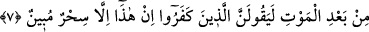

7. Gökleri ve yeri altı günde yaratan O’dur. (O zaman) Arşı su üzerinde idi. (Bu
kainatı yarattı)ki hanginizin daha güzel iş yaptığını denesin. Böyle iken yine sen:
“Öldükten sonra diriltileceksiniz.” desen, inkar edenler mutlaka: “Bu, apaçık bir
büyüden başka bir şey değildir.” derler.
“Gökleri” yedi göğü “ve yeri altı günde yaratan O’dur.”
Birinci gök, dünya seması, mü’minlerin ruhlarının karar kıldığı yerdir. İkinci gök,
âbidlerin ruhlarının karargâhıdır. Üçüncü gök, zâhidlerin ruhlarının karargahıdır.
Dördüncü gök, mârifet ehlinin ruhlarının makamıdır. Beşinci gök, nebîlerin ruhlarının
makamıdır. Altıncı gök, nebîlerin ruhlarının makamıdır. Yedinci gök, rasullerin
ruhlarının makamıdır. Bütün bu göklerin üzerinde “Kürsi” vardır. Kürsî, ulü’l-azm
peygamberlerin ruhlarının makamıdır. Bu feleğin üzerinde ise Rahman’ın Arşı vardır.
Bu Arş son Peygamber (s.a)’in ruhunun makamıdır.
“Semâ” kelimesinin çoğul kılınması, zikrettiğimiz gibi ulvî şeylerin asıl itibarı ile
farklı olmasından kaynaklanmıştır. Ulvî şeyler zatları bakımından da farklıdır. Çünkü
gökler yedi katman olup her iki tabaka arasında İbn Mes’ud (r.anhümâ)’dan nakledilen
haberde vârid olduğu üzere beş yüz senelik mesafe bulunmaktadır.[97] Yedinci gök ile
Kürsi, Kürsi ile de Arş arasında beş yüzer yıllık mesafe vardır.
Allah’ın hükümlerinin menşei, kazalarının kaynağı, emir, yasak, rızık, vaad ve
tehdidinin inme yeri gökler olduğu için âyette önce gökler zikredilmiştir. Çünkü kullara
emredilen, yasaklanan, dünyada rızık olarak verilen, âhirette verileceği vadedilen her
şey, gökte takdir edilmiş ve yazılmıştır. Gökler ve göklerdeki yüce eserler o eşsiz
kudrete delâlet etme bakımından daha zâhir, büyüklük ve azamete şâhitlik etme
bakımından da çok daha açıktır.
Yerlerin de yedi tane olduğuna ‘gökler’ kelimesi delâlet ediyor. “Yer” kelimesinin
tekil kılınması ise süflî şeylerin hadd-i zâtında tek bir şey olmasından ileri gelmiştir.
“Allah, yedi kat göğü ve yerden bir o kadarını yaratandır.” (et-Talak, 65/12) âyeti de,
Müfti Sa‘dî’nin Hâşiye’sinde olduğu gibi yedi iklim olarak te’vil edilmiştir.
Doğu ile Batı arasında, gök ile yer arasında olduğu gibi beş yüz yıllık mesafe vardır.
Dünyanın büyük çoğunluğu ıssız yerlerden, dağ ve denizlerden ibaret olup yerleşim
yerleri çok azdır. Bu yerleşim yerlerinin çoğu da inkar ehline ait olup azı îmân ve İslâm
ehlinindir. Ehl-i İslâm’ın bir çoğu da bid’at ve hevâ ehli olup bunlar, dalâlet ve bâtıl
üzeredir. Ehl-i İslâm’ın az bir bölümü hak üzeredir. Bunlar da Ehl-i sünnet ve’l-
cemaattir.
“Altı günde” Secde sûresinde belirtildiği üzere gökleri iki günde, yeri iki günde,